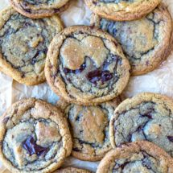

Chocolate Chip Cookies

Image of the finished cookies!
This recipe is very simple, and produces delicious chocolate chip cookies.
Ingredients:
- 1 cup butter
- 1 1/2 cups brown sugar (packed)
- 1 large egg
- 1 egg yolk
- 1 tablespoon vanilla extract
- 3 cups all-purpose flour
- 1 teaspoon baking soda
- 3/4 teaspoon kosher salt
- 10 ounces chocolate-chips
Steps:
- Preheat oven to 375 F. Line baking sheets with parchment paper.
- Melt butter in a heavy saucepan. The butter should be just melted.
- Add brown sugar to a large bowl.
- Pour melted butter over sugar.
- Stir to combine butter and sugar. Let stand 5 minutes.
- Add egg and stir to combine.
- Stir in vanilla extract.
- Add flour, baking soda, and salt. Stir until just combined.
- Stir in chocolate chips.
- Using a medium cookie scoop (1.5 tablespoon), drop scoops of dough 2 inches apart on prepared cookie sheet.
- Bake for about 7-10 minutes, or until the edges of the cookies are golden brown.
- Let cookies cool on sheet for 5 minutes.